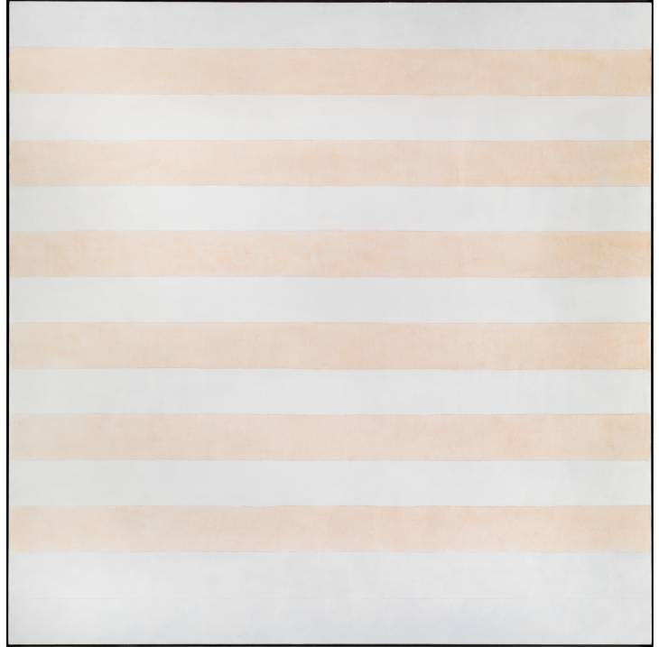

Agnes Martin

Agnes Bernice Martin (March 22, 1912 – December 16, 2004), born in Canada, was an American abstract painter. Her work has been defined as an "essay in discretion on inward-ness and silence". Although she is often considered or referred to as a minimalist, Martin considered herself an abstract expressionist.
She was awarded a National Medal of Arts from the National Endowment for the Arts in 1998.